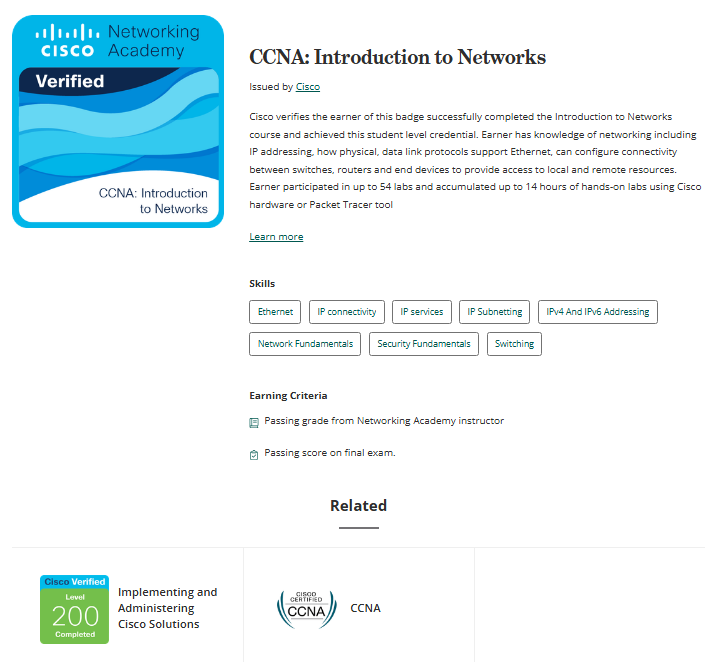
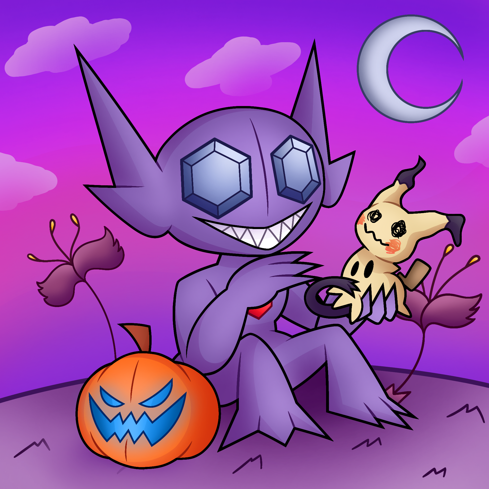

¡Buenas! Esta es mi web personal, en este sitio pretendo mostrar cosas relacionadas tanto con mis estudios y conocimientos, así como tambien un poco de mi lado personal
¿Quién soy?
Mi nombre es Gabriel Alejandro Pabón Goncalvez, nací el 17 de junio de 2004, en Maracay, ubicado en el estado de Aragua, Venezuela.
Vivi en Venezuela durante mis primeros 13 años de vida hasta que en octubre del 2017 junto a parte de mi familia nos mudamos a Argentina, en donde resido hasta el día de hoy
Apartado académico
Mis años de primaria los realicé en Venezuela
Estando en Argentina curse el secundario en la escuela politecnica Manuel Belgrano N-5 D.E.4, en los años 2018-2023, escogiendo la especialidad de tecnico en electronica.
Actualmente continúo cursando una Tecnicatura enfocada en el desarrollo y creacion de software en la Universidad Argentina De la Empresa (UADE), Mi cursada comenzo en 2024 y a dia de hoy sigo haciendo la carrera.
Experiencias y habilidades
Experiencia laboral
Durante mi ultimo año del secundario realice unos meses de pasantías por trato escolar en la empresa LENOR en el area de laboratorios y ensayos, ahí aprendí temas de controles de calidad de productos, uso de instrumentos de medicion y testing del funcionamiento de productos importados productos.
Conocimientos en programacion
Por hoy conozco un par de lenguajes de programacion, mayormente gracias por mi carrera, en concreto y junto las herramientas con las cuales llegue a aprender dichos lenguajes son:
Python / Thonny
SQL / SSMS 20
Java / Eclipse
HTML, CSS y Javascript / VisualStudioCode
Tambien hice un curso de redes de datos del programa de Netacad en colaboracion con UADE, aqui aprendi cosas relacionadas con el manejo de direcciones IP, junto algunas simulaciones donde pude manejar routes, switches, entre otros.

GitHub
Una de las plataformas donde se me puede encontrar es GitHub, aqui posteo cada cierto tiempo algunos proyectos propios o algun que otro codigo de practica.
En caso de que tengan interes de checar mi perfil les dejo el link directo a mi perfil:
Soy una persona tranquila, paso mayor parte de mi tiempo en casa, fuera de los estudios, realizando mis hobbies y quehaceres del hogar.
Entre mis hobbies tengo algunos juegos, mayormente de celular. Hacer ejercicios sencillos en casa. Hacer dibujos digitales a traves de mi celular, mi estilo se centra en lo animado y colorido, no soy muy apegado por el estilo realista.
Algunos ejemplos de mis dibujos:

Contactos
En caso de tener interes en contactarme tengo disponibles los siguientes medios